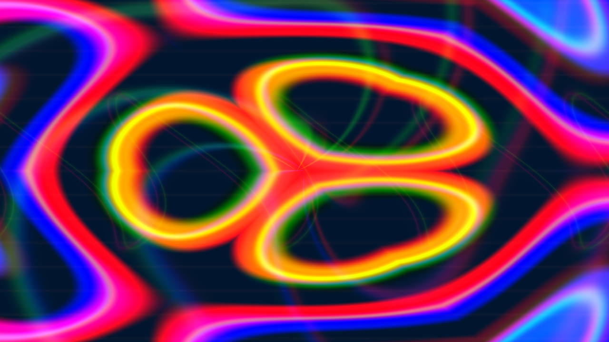

Mix in four layers.
Video, stills and six native generators. Blend modes, A/B crossfading, beat-quantized launches and tempo-fit clip loops. Cut to random video positions on the beat, with intervals from quarter-beat to 16 beats.
A live visual instrument for the way you play.
Clips, analog character and music-driven motion.
From your Mac to every surface in the room.
Launch a clip. Mix another layer. Push the feedback until something happens. PXL VJ keeps the tools close and the picture in front of you.
Video, stills and six native generators. Blend modes, A/B crossfading, beat-quantized launches and tempo-fit clip loops. Cut to random video positions on the beat, with intervals from quarter-beat to 16 beats.
Pick your audio interface or Mac system audio. Let bass, mids or highs move enabled effects with Music → FX Depth. Share tempo and beat phase through Ableton Link.
Tape instability, chroma split, feedback and kaleidoscope. Add dither, halftone, fluted glass, CRT and classic MilkDrop-inspired presets. Sort pixels by luminance or color, horizontally or vertically.
Start clean. Go strange. Layer analog-style processing with an effects library built for performance. Then let the music take it somewhere else.
Put your hands on itSend a layer or the full mix to a mapped output. Shape it to the space, from a single projector to a multi-surface installation.
Corner pins, ellipse masks, brightness and edge feathers. Route surfaces across eight logical output buses.
Clean projector windows on Mac displays, or native video modes through compatible Blackmagic UltraStudio and DeckLink hardware.
Full mix blackout, alignment grid and explicit output start/stop. Match the video mode to the display you are using.
Import a UV-mapped OBJ, DAE, SCN or USDZ model. Your layer's video or generator becomes its moving texture. Shape its depth, light it, spin it, and let the music move it.
Adjust model position, rotation, scale, camera distance and perspective. UVs provide the texture layout; you handle the alignment.
Mesh depth, directional light, depth fog, camera orbit and audio-driven motion. Render it through the same mixer and surface outputs.
Use a black/white image or another animated layer as a mask. White reveals, black hides. Invert, soften or read alpha to build your own cutouts.
The iPad companion brings clip launching, beat cuts, pixel sorting, 3D, masks, mixing and mapping controls onto a touch surface. Paired over your local network.
COMPANION SOURCE INCLUDED · DEVELOPMENT INSTALL
Generate clips through ALi Imagine's local LTX workflow, then trigger and process them live. A prepared clip becomes part of your instrument.
ALi IMAGINE REQUIRED FOR AI CLIP GENERATIONNative Apple Silicon. Free and open source.
Unzip the download, move PXL VJ into Applications, and open it. Start with the built-in generators; no media is required.
Enable music capture in Settings → Audio Input. Blackmagic output requires the separately installed Desktop Video driver and compatible hardware. The iPad companion currently requires building and signing the included iOS source.
This is an early release. Test your show, media and physical outputs on your own rig before performing.
Clip playback, generators, effects, audio analysis and surface mapping run locally. The app uses Apple's Metal graphics framework. AI clip generation connects to your separately installed ALi Imagine application. iPad control and Ableton Link use your local network.
The current release generates AI clips in the background through ALi Imagine, then plays and processes those clips live. Continuous diffusion streaming is not part of this download.
A projector connected as a Mac display, or compatible Blackmagic hardware with Desktop Video installed. Configure your surfaces, choose the matching output bus and test alignment and latency with your actual display.
The matching source archive is available beside the Mac download. PXL VJ is provided under GPL-2.0-or-later, with the corresponding licenses and third-party notices included. The archive also includes the iPad companion source.